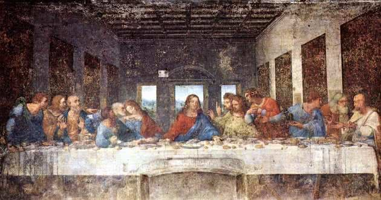
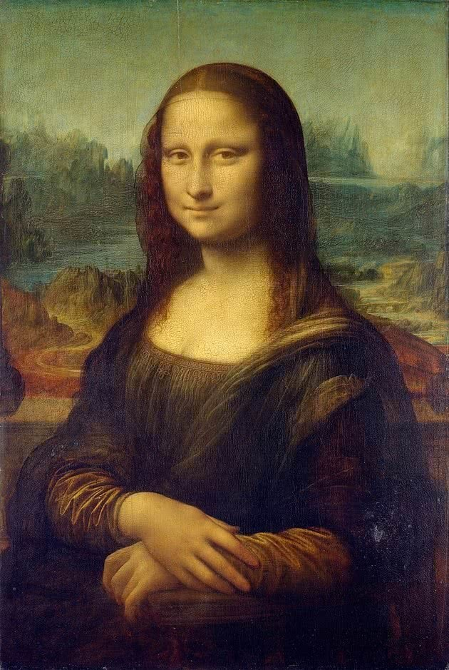
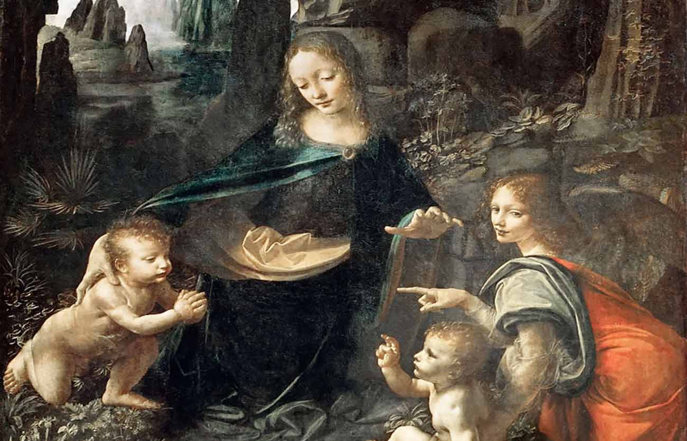

La anunciación

La última cena
- La última cena es una pintura mural ejecutada por Leonardo da Vinci entre los años 1493 y 1498. Se encuentra en la pared del comedor del Convento de Santa Maria Delle Grazie en Milán. Esta es la obra que le dará notoriedad al artista. Pero lamentablemente, debido al hecho de que Leonardo aplicó una técnica poco ortodoxa que comprometería su durabilidad. Mezcló así las técnicas del temple y el óleo sobre capas de yeso en un enlucido. Hoy es necesario hacer un esfuerzo para imaginar todo el esplendor de aquella pintura original, aunque sigue siendo un milagro que aún pueda ser contemplada.
La Mona Lisa
- También conocida como La Gioconda, La Mona Lisa es un óleo sobre madera pintado por Leonardo entre 1503 y 1506. La pintura es un retrato de Mona Lisa, la joven esposa de Franceso de Giocondo, según el testimonio de Giorgio Vasari (1511-1574), pintor, arquitecto, y biógrafo de varios artistas del Renacimiento italiano. La obra fue adquirida por Francisco I, rey de Francia desde 1515 hasta 1547. En 1911 la pintura fue robada y se recuperó dos años después, en 1913.


En la siguiente tabla podrás observar más elementos
|  | La Virgen de las rocas es un óleo sobre madera y fue ejecutado alrededor de 1485. Aquí, las figuras se encuentran frente a una gruta y sus formas están envueltas en una bruma (sfumato) que le confiere a la pintura un carácter casi surrealista. Esta composición es un perfecto ejemplo del dominio del claroscuro en la pintura de Leonardo, así como de la técnica del sfumato que él desarrolló. |
| Sobre esta obra hay incontables teorías y especulaciones, pero su verdadera maravilla no está tanto en la llamada sonrisa enigmática, sino en la técnica utilizada. En la representación se introduce la perspectiva atmosférica que tanto influirá en el Barroco y en Velázquez. En este retrato, Leonardo colocó la figura en primer plano, pintándola con nitidez, mientras que el paisaje es suavemente difuminado. |
 Biografía de Leonardo Da Vinci
Biografía de Leonardo Da Vinci
En el siguiente cuadro podrás leer un poco sobre su fallecimiento